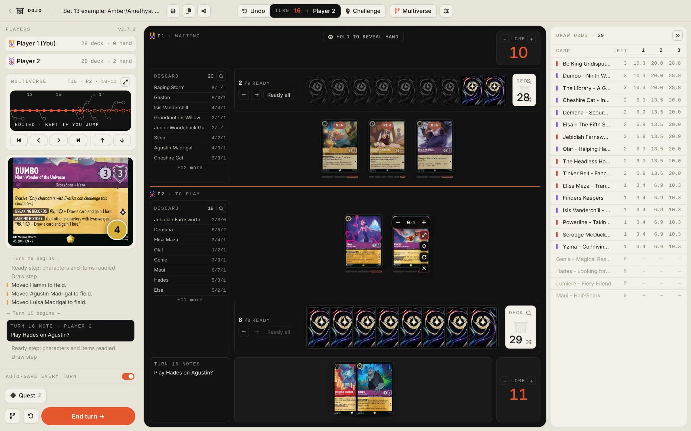
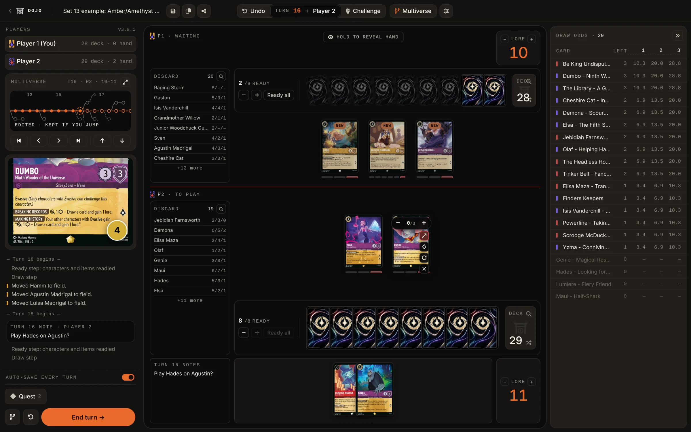

Try every line. Branch any turn.
Replay any match between two decks turn by turn, then rewind to any moment, branch a new timeline, reshuffle, or hot-swap cards to see how a different line would have played out.
A companion to your favorite simulator. Paste a match log from Duels.ink and the whole game shows up as a multiverse tree, ready to explore.
- 01 Manual sandbox
- 02 Rewind and branch
- 03 Win-probability meters
A real match, mid-turn.
Two decks loaded, a turn-by-turn log, and the multiverse of possible turns one keystroke away. This is the Set 13 demo at turn 16, as the Dojo shows it today.


- 01
Win-probability meters
Board control (BCR) and lore velocity (LVI) show who actually owns the board, updated on every action.
- 02
Card details on hover
Hover any card for the full card, with its CTL, BCR, RDS and LVI underneath.
- 03
Turn-by-turn log
Every move is logged, and your turn notes (in Markdown) sit right in the log.
- 04
Drag and drop anywhere
Move cards between hand, field, ink and discard. Nothing blocks you.
- 05
Draw odds
Every card left in your deck, with the chance to draw it on the next draw and the ones after.
Paste a Duels.ink log. Get the whole match back.
Export the match log from your Duels.ink game and paste it into the Dojo. Every turn becomes a node in the multiverse tree, with hands, ink, board and cards played rebuilt for you.
Imported turns
- 01
Both log formats, and replays
Older “Player 1 / Player 2” logs and Duels.ink's current “You / Opponent” logs both import, and so do replay files.
- 02
It reads what you paste
A decklist, a log, a replay or a saved session: the readout says what it found and offers the next step. No silent failures.
- 03
Branch from any turn
Once imported, every turn is a save point. Jump back to turn 3 and try the line you wish you'd played. The original game stays intact.
Every turn is a save point. Every save point is a branch.
The Dojo snapshots the game at the start of every turn. Rewind to turn 4, play your hand differently, and the original line stays alive next to the new one, in one tree you can pan, zoom and walk with the keyboard. This is the whole Set 13 demo: click a node.
Multiverse
Drag to pan · Ctrl + scroll to zoom · click a node · arrow keys to walk the tree- 01
Rewind, instantly
Every saved turn is a complete snapshot of the game. Jump back to turn 2 from turn 9: hands, ink, board and log all restored exactly.
- 02
Branch without losing
When you jump back, the line you left is saved to a side branch. Compare both outcomes side by side.
- 03
Reshuffle and redraw
Don't like the hand? Reshuffle from any node to see what a different draw does to the same matchup.
A real sandbox, not a referee.
The Dojo never blocks you. Play an illegal move if it surfaces a line worth checking. The point is theorycraft, not enforcement.
the user is the referee.
- 01
Multiverse tree
A zoomable, draggable, keyboard-navigable canvas of every branch you've explored. Click a node and you're there.
Core - 02
Auto-save every turn
Switch it on and the Dojo saves the start of every turn for you. Name the saves and comment them in Markdown.
Save - 03
Hot-swap any card
Drag cards between hand, field, ink and discard. Substitute a card mid-line, or add one that isn't in your deck to test it.
Manual - 04
Reshuffle the unknown
Lock the board, reshuffle the deck, redraw. Test the same position against a fresh top of deck without losing the line.
Variance - 05
Live draw odds
For every card in your deck: how many copies are left, and the chance of drawing it on the next draw or within the next few.
Odds - 06
Import Duels.ink games
Paste a match log or drop a replay file and the whole game lands in the multiverse, one node per turn.
Import - 07
Library and share links
Decks and sessions stay on this device. Share a deck or a whole multiverse with a short link, and sign in if you want them on every device.
Library - 08
Day and night
Mineral by day, Kiln at night. The Dojo follows your device, or pick one in Tweaks.
Theme
From two decklists to a mapped multiverse in five minutes.
Load two decks
Paste a decklist, pick a saved or default deck, or leave a seat empty for 60 random cards.
Play turn by turn
Drag cards. Quest. Challenge. Ink. The Dojo logs everything and moves the win-probability meters as the board shifts.


Branch the multiverse
Press M. Click any earlier turn. Branch. Play a different line, and compare the outcomes side by side.
Revisit your matches. Explore every line.
A companion to your favorite Lorcana simulator. Open the Dojo. Load two decks. Play. Rewind. Branch. Repeat.
Open Practice Dojo